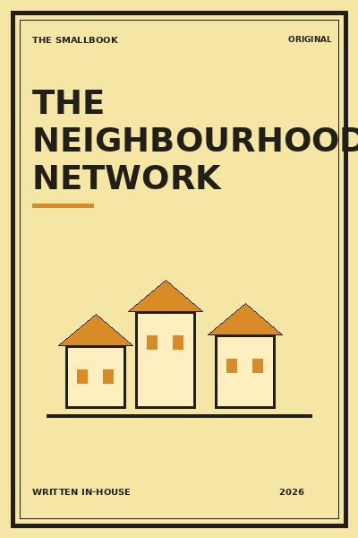

Library › Psychology & People
The Neighbourhood Network - Summary & Key Lessons

Strong local relationships make daily life safer, warmer and more resilient long before a crisis asks for them.
📖 OPEN THE FULL INTERACTIVE BREAKDOWN →🌐 Read it in Hindi, Hinglish, Gujarati, Tamil & 22 more languages, with audio.
💡 The Big Idea
Strong local relationships make daily life safer, warmer and more resilient long before a crisis asks for them. The lessons below are designed to be used slowly: read one, try it in a real situation, and return with evidence rather than agreement.
🧠 The 8 Key Lessons
Lesson 1: Know the Near Circle
Chapter 1: Know the Near Circle
Community begins with the people whose names you can learn and whose needs you can notice. Strong local relationships make daily life safer, warmer and more resilient long before a crisis asks for them. The useful question is not whether this is perfectly true in every situation, but what it helps you notice before you act. Most people skip this step because the visible task feels urgent. The book asks you to slow down long enough to identify the constraint, trade-off or relationship underneath the task. Once that is clear, a smaller and more reliable move becomes possible. Repeated over time, that move changes the system rather than merely decorating the surface of it.
📖 Example: A resident learns the names of shopkeepers and security staff, making small problems easier to solve. The point is not to copy the situation exactly. Notice the sequence: make the hidden condition visible, choose the next action that respects it, and then observe what happens. That turns a memorable story into a testable practice instead of a slogan. Read the full example →
⚡ Do this: Learn and use the name of one person you regularly pass.
Lesson 2: Trade Skills, Not Favours
Chapter 2: Trade Skills, Not Favours
Reciprocity is healthier when everyone can contribute something. Strong local relationships make daily life safer, warmer and more resilient long before a crisis asks for them. The useful question is not whether this is perfectly true in every situation, but what it helps you notice before you act. Most people skip this step because the visible task feels urgent. The book asks you to slow down long enough to identify the constraint, trade-off or relationship underneath the task. Once that is clear, a smaller and more reliable move becomes possible. Repeated over time, that move changes the system rather than merely decorating the surface of it.
📖 Example: A student helps a neighbour set up a phone; the neighbour later shares a trusted electrician’s number. The point is not to copy the situation exactly. Notice the sequence: make the hidden condition visible, choose the next action that respects it, and then observe what happens. That turns a memorable story into a testable practice instead of a slogan. Read the full example →
⚡ Do this: List one small skill you could offer locally.
Lesson 3: Create Low-Stakes Rituals
Chapter 3: Create Low-Stakes Rituals
Regular, simple contact builds trust better than grand events. Strong local relationships make daily life safer, warmer and more resilient long before a crisis asks for them. The useful question is not whether this is perfectly true in every situation, but what it helps you notice before you act. Most people skip this step because the visible task feels urgent. The book asks you to slow down long enough to identify the constraint, trade-off or relationship underneath the task. Once that is clear, a smaller and more reliable move becomes possible. Repeated over time, that move changes the system rather than merely decorating the surface of it.
📖 Example: A Sunday badminton hour brings people together without requiring anyone to host a dinner. The point is not to copy the situation exactly. Notice the sequence: make the hidden condition visible, choose the next action that respects it, and then observe what happens. That turns a memorable story into a testable practice instead of a slogan. Read the full example →
⚡ Do this: Suggest one repeatable 30-minute neighbourhood ritual.
Lesson 4: Share Useful Information
Chapter 4: Share Useful Information
Reliable local information is a public good. Strong local relationships make daily life safer, warmer and more resilient long before a crisis asks for them. The useful question is not whether this is perfectly true in every situation, but what it helps you notice before you act. Most people skip this step because the visible task feels urgent. The book asks you to slow down long enough to identify the constraint, trade-off or relationship underneath the task. Once that is clear, a smaller and more reliable move becomes possible. Repeated over time, that move changes the system rather than merely decorating the surface of it.
📖 Example: A building group shares water-shutoff timings and verified emergency contacts instead of rumours. The point is not to copy the situation exactly. Notice the sequence: make the hidden condition visible, choose the next action that respects it, and then observe what happens. That turns a memorable story into a testable practice instead of a slogan. Read the full example →
⚡ Do this: Create or update one verified contact list for your building or lane.
Lesson 5: Make Requests Specific
Chapter 5: Make Requests Specific
People want to help but cannot act on vague distress. Strong local relationships make daily life safer, warmer and more resilient long before a crisis asks for them. The useful question is not whether this is perfectly true in every situation, but what it helps you notice before you act. Most people skip this step because the visible task feels urgent. The book asks you to slow down long enough to identify the constraint, trade-off or relationship underneath the task. Once that is clear, a smaller and more reliable move becomes possible. Repeated over time, that move changes the system rather than merely decorating the surface of it.
📖 Example: A new parent asks “Could you collect one parcel on Tuesday?” and gets an immediate yes. The point is not to copy the situation exactly. Notice the sequence: make the hidden condition visible, choose the next action that respects it, and then observe what happens. That turns a memorable story into a testable practice instead of a slogan. Read the full example →
⚡ Do this: Turn one vague need into a small, specific request.
Lesson 6: Include the Quiet People
Chapter 6: Include the Quiet People
The loudest voices are not the whole community. Strong local relationships make daily life safer, warmer and more resilient long before a crisis asks for them. The useful question is not whether this is perfectly true in every situation, but what it helps you notice before you act. Most people skip this step because the visible task feels urgent. The book asks you to slow down long enough to identify the constraint, trade-off or relationship underneath the task. Once that is clear, a smaller and more reliable move becomes possible. Repeated over time, that move changes the system rather than merely decorating the surface of it.
📖 Example: A residents’ group asks domestic workers and elderly residents about a gate change before voting. The point is not to copy the situation exactly. Notice the sequence: make the hidden condition visible, choose the next action that respects it, and then observe what happens. That turns a memorable story into a testable practice instead of a slogan. Read the full example →
⚡ Do this: Before a group decision, ask whose experience is missing.
Lesson 7: Repair Small Ruptures
Chapter 7: Repair Small Ruptures
Misunderstandings become feuds when nobody names them early. Strong local relationships make daily life safer, warmer and more resilient long before a crisis asks for them. The useful question is not whether this is perfectly true in every situation, but what it helps you notice before you act. Most people skip this step because the visible task feels urgent. The book asks you to slow down long enough to identify the constraint, trade-off or relationship underneath the task. Once that is clear, a smaller and more reliable move becomes possible. Repeated over time, that move changes the system rather than merely decorating the surface of it.
📖 Example: Two neighbours clarify a parking issue in person before it becomes a building-wide argument. The point is not to copy the situation exactly. Notice the sequence: make the hidden condition visible, choose the next action that respects it, and then observe what happens. That turns a memorable story into a testable practice instead of a slogan. Read the full example →
⚡ Do this: Use one calm sentence: “I may have misunderstood. Can we clear this up?”
Lesson 8: Keep Boundaries Too
Chapter 8: Keep Boundaries Too
Community is not constant availability. Clear limits make help sustainable. Strong local relationships make daily life safer, warmer and more resilient long before a crisis asks for them. The useful question is not whether this is perfectly true in every situation, but what it helps you notice before you act. Most people skip this step because the visible task feels urgent. The book asks you to slow down long enough to identify the constraint, trade-off or relationship underneath the task. Once that is clear, a smaller and more reliable move becomes possible. Repeated over time, that move changes the system rather than merely decorating the surface of it.
📖 Example: A volunteer sets phone-off hours and can continue helping over months. The point is not to copy the situation exactly. Notice the sequence: make the hidden condition visible, choose the next action that respects it, and then observe what happens. That turns a memorable story into a testable practice instead of a slogan. Read the full example →
⚡ Do this: Decide one boundary that protects your energy while keeping you connected.
✅ 5-Step Action Plan
- Learn and use the name of one person you regularly pass.
- List one small skill you could offer locally.
- Suggest one repeatable 30-minute neighbourhood ritual.
- Create or update one verified contact list for your building or lane.
- Turn one vague need into a small, specific request.
⚠️ When This Doesn't Work
A book can offer a useful lens, not a universal rule. Your money, health, family duties, workplace power and access to support change what is possible. Keep the principle, adapt the practice, and ask for expert help where the stakes are high.
💀 The Graveyard Proves It
💬 Best Quotes from The Neighbourhood Network
- “Strong local relationships make daily life safer, warmer and more resilient long before a crisis asks for them.”
- “Small, honest experiments are more useful than impressive intentions.”
- “A good idea becomes valuable only when it changes the next choice.”
Interactive version: mark lessons as read, listen in your language, share quote cards.